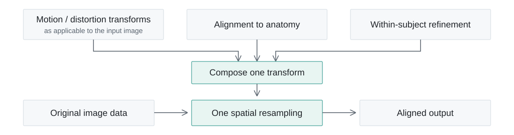

Within-subject alignment
Each acquisition is aligned to the participant’s anatomy. Within-subject refinement improves consistency across that person’s runs and visits during functional processing, before motion correction and denoising.
Configuration
independent aligns each acquisition separately and remains the shipped configuration default. subject_refined adds within-subject refinement. rebuild estimates a reference using all available sessions; frozen uses a saved reference when adding sessions.
One spatial resampling

The within-subject correction is composed with the existing transforms. The original images are resampled once with the combined transform.
Review alignment
The quality-control gallery shows fixed-anatomy movies, refinement comparisons, and scan-reference measurements.
RMS measures differences between scan references and depends on alignment, contrast, and noise. The normalized spatial gradient describes sharpness. Comparisons use fixed anatomical masks, image grids, and display limits.